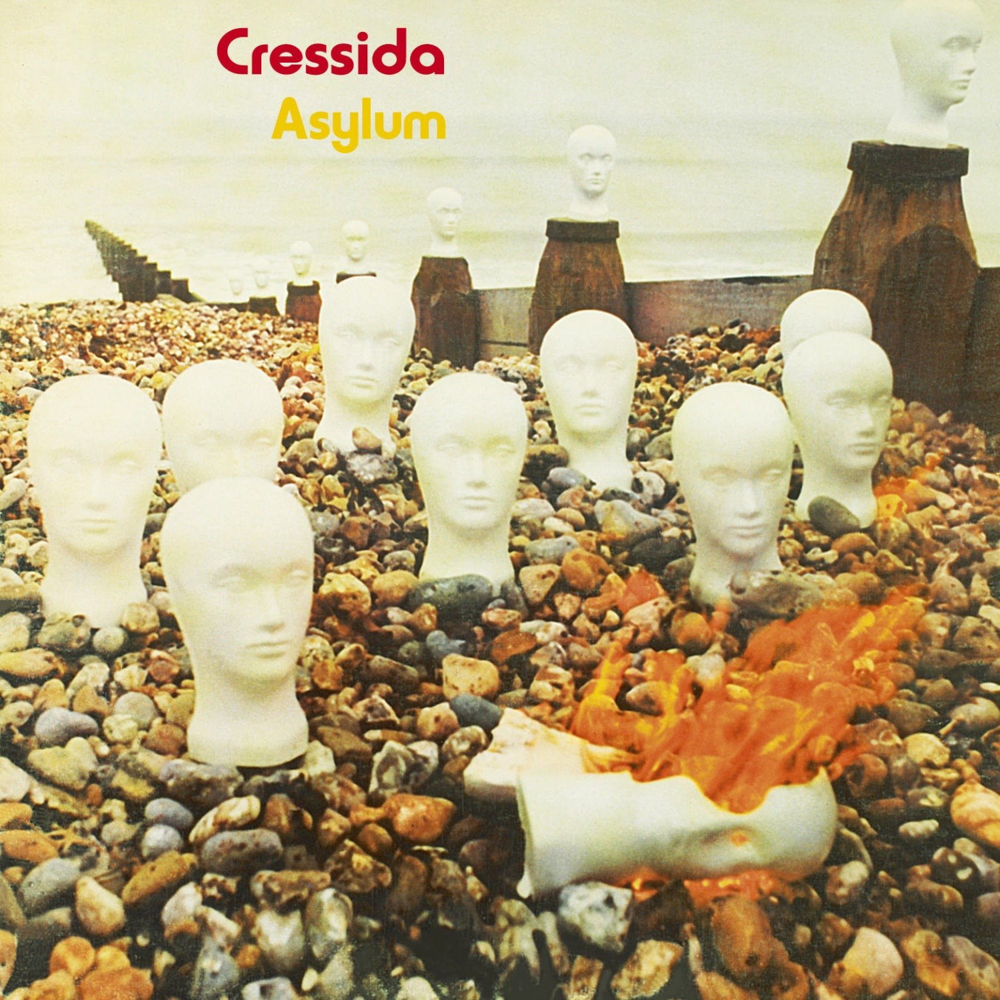
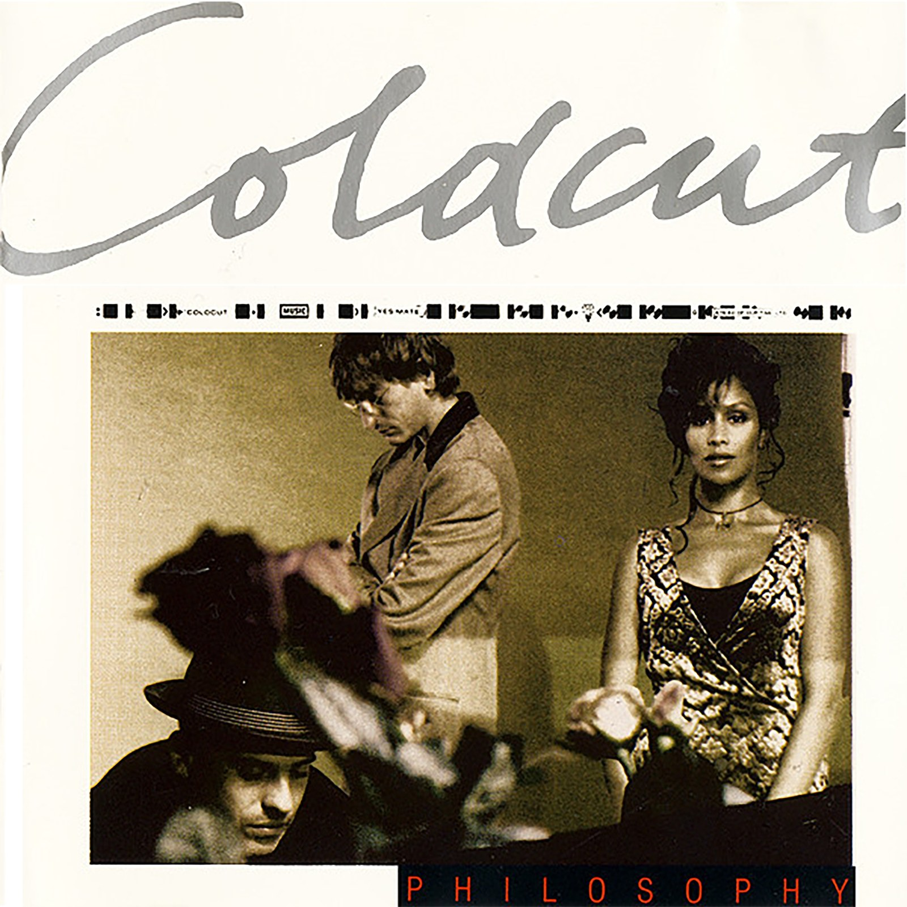
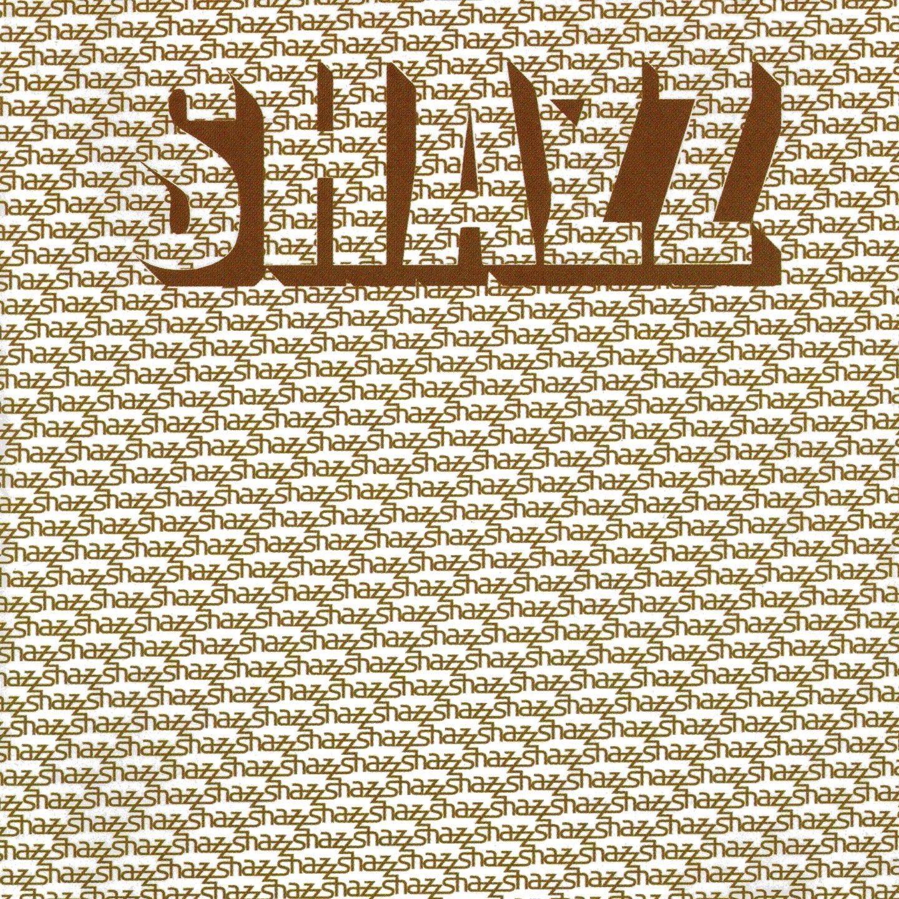
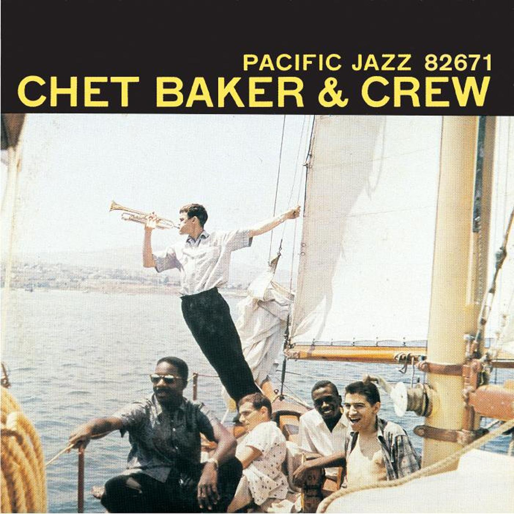
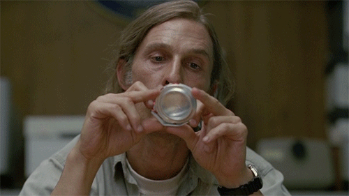
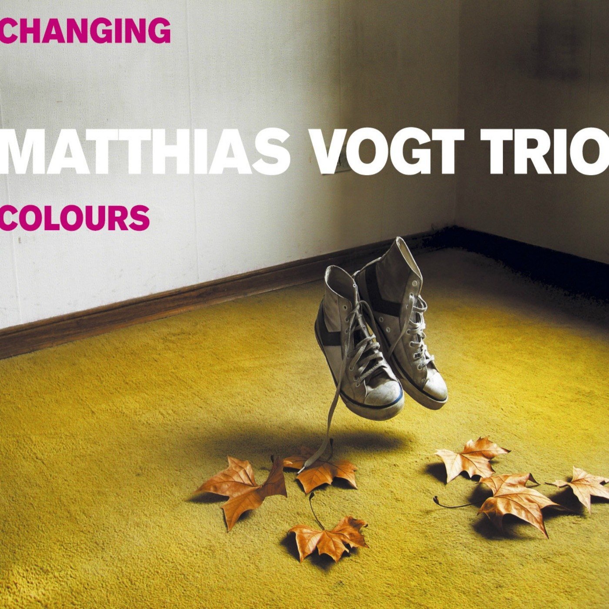
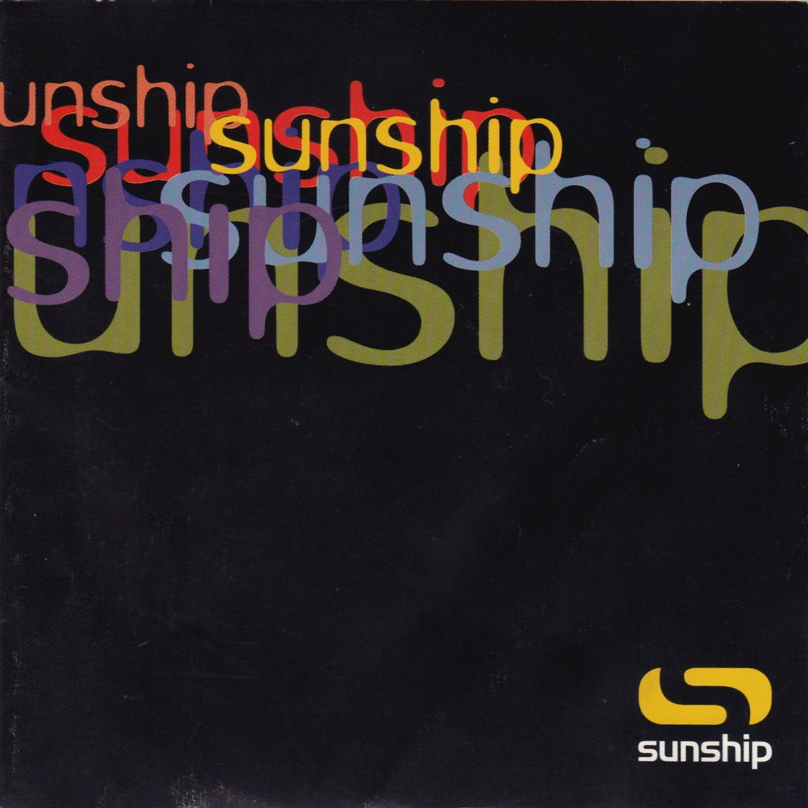
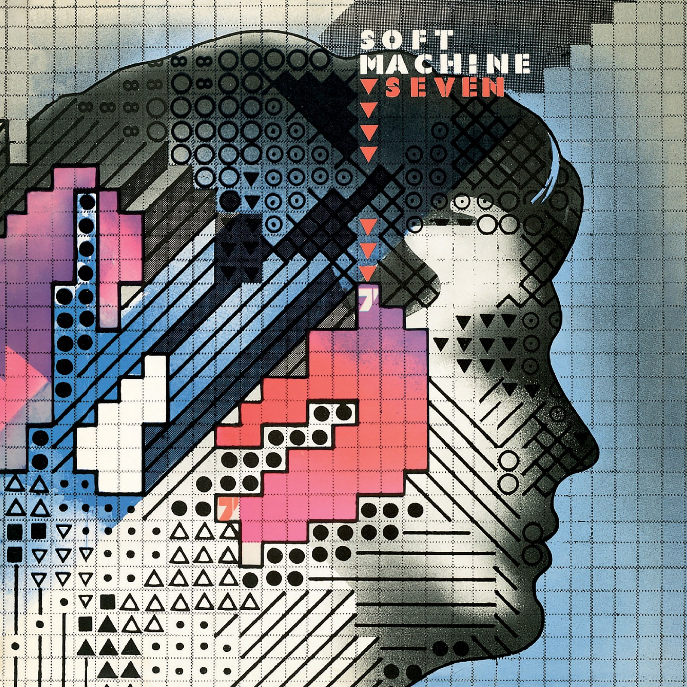
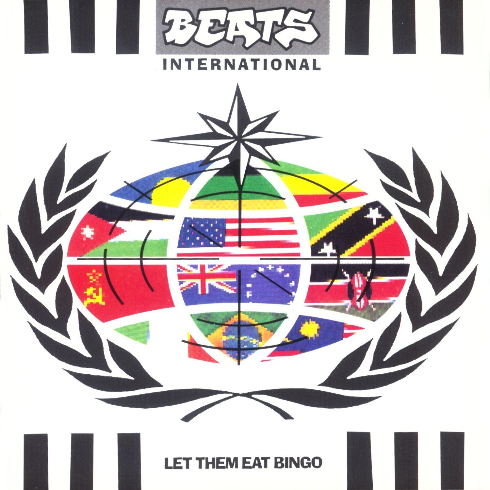

CRVI000122Shigeo Fukuda - [Poster: figure walking through a red spiral, LOOK series]
Title not established
Title not established

CRVI000140Jutaro Itoh - 企業空間のサイン — Corporate Signs (Designing Signs Vol. 2)
Jutaro Itoh and Atsuko Taguchi · Rikuyo-sha
Jutaro Itoh and Atsuko Taguchi · Rikuyo-sha

CRVI000184Designer unknown - Швейныя машины Компаніи Зингеръ — Singer Company Sewing Machines
Russian Singer emblem · advertising poster
Russian Singer emblem · advertising poster

CRVI000120Tadanori Yokoo - Tadanori Yokoo — Stedelijk Museum Amsterdam
Exhibition poster, 22.2 t/m 14.4 1974 · 1974
Exhibition poster, 22.2 t/m 14.4 1974 · 1974

CRVI000096Stock, Hausen & Walkman - Organ Transplants Vol. 1
Designer unknown · Hot Air · 1996
Designer unknown · Hot Air · 1996
CRVI000213Unknown - Stare
Reaction GIF · Walton Goggins as Rick Hatchett, The White Lotus · 72 frames, 3.6s loop · 2025
Reaction GIF · Walton Goggins as Rick Hatchett, The White Lotus · 72 frames, 3.6s loop · 2025

CRVI000106Natori Shunsen - Matsumoto Koshiro as the white bearded Ikkyu
from the supplement to the Collection of Shunsen portraits (Shunsen nigao-e shu) series · color woodblock · 1929
from the supplement to the Collection of Shunsen portraits (Shunsen nigao-e shu) series · color woodblock · 1929
CRVI000150Art Blakey's Jazz Messengers - Art Blakey's Jazz Messengers
Designed by Marvin Israel · Atlantic 1278 · 1957
Designed by Marvin Israel · Atlantic 1278 · 1957

CRVI000112Kiyoshi Awazu - Kiyoshi Awazu Exhibition & Workshop
The 43rd International Design Conference in Aspen · 1993
The 43rd International Design Conference in Aspen · 1993

CRVI000152Cressida - Asylum
Designed by Keef · Vertigo 6360 025 · 1971
Designed by Keef · Vertigo 6360 025 · 1971

CRVI000235Coldcut - Philosophy
Designer unknown · Ninja Tune · 1993
Designer unknown · Ninja Tune · 1993

CRVI000037Orb - Orbus Terrarum
Artwork by MadArk · Island Records · 1995
Artwork by MadArk · Island Records · 1995

CRVI000210Unknown - Confused
Reaction GIF · Jennifer Saunders as Edina Monsoon · 20 frames, 1.3s loop
Reaction GIF · Jennifer Saunders as Edina Monsoon · 20 frames, 1.3s loop

CRVI000242Shazz - Shazz
Designer unknown · Columbia · 1998
Designer unknown · Columbia · 1998

CRVI000017David Chesworth - 50 Synthesizer Greats
Designed by Geronimo Creative Services · 1979
Designed by Geronimo Creative Services · 1979

CRVI000059Various - The Philosophy of Sound and Machine
Designed by Third Earth · Applied Rhythmic Technology · 1992
Designed by Third Earth · Applied Rhythmic Technology · 1992

CRVI000145Gentle Giant - Octopus
Designed by Roger Dean · 1972
Designed by Roger Dean · 1972

CRVI000169Chet Baker - Chet Baker & Crew
Designer unknown · Pacific Jazz 1224 · 1956
Designer unknown · Pacific Jazz 1224 · 1956

CRVI000205Unknown - Time
Reaction GIF · Matthew McConaughey as Rust Cohle · 31 frames, 3.1s loop
Reaction GIF · Matthew McConaughey as Rust Cohle · 31 frames, 3.1s loop

CRVI000061Tom Cameron - Music To Wash Dishes By
Artwork by Tom Cameron · Bathing Records, Inc. · 1982
Artwork by Tom Cameron · Bathing Records, Inc. · 1982

CRVI000244Matthias Vogt Trio - Changing Colours
Designer unknown · INFRACom! · 2006
Designer unknown · INFRACom! · 2006

CRVI000073Event Cloak - Life Strategies
Designer unknown · 2017
Designer unknown · 2017

CRVI000097Tonto - It's About Time
Designer unknown · Polydor · 1974
Designer unknown · Polydor · 1974

CRVI000049Jon Appleton - The World Music Theatre Of Jon Appleton
Designed by Ronald Clyne · 1974
Designed by Ronald Clyne · 1974

CRVI000128Koichi Sato - The 6th Iwaki Prefecture Art Festival
1982
1982

CRVI000195Unknown - Desk Flip
Reaction GIF · Panda in an office · 43 frames, 5.2s loop
Reaction GIF · Panda in an office · 43 frames, 5.2s loop

CRVI000240Sunship - Sunship
Designer unknown · Filter · 1997
Designer unknown · Filter · 1997

CRVI000110Kiyoshi Awazu - The 6th Contemporary Japanese Sculpture Exhibition
第6回現代日本彫刻展 · Ube City Open-Air Sculpture Museum, Tokiwa Park, Ube, Yamaguchi · 1975
第6回現代日本彫刻展 · Ube City Open-Air Sculpture Museum, Tokiwa Park, Ube, Yamaguchi · 1975

CRVI000078Jega - Spectrum
Designer unknown · 1998
Designer unknown · 1998

CRVI000117Tadanori Yokoo - Are You Ready for Foods?
Advertisement for a Chinese restaurant · 1989
Advertisement for a Chinese restaurant · 1989

CRVI000092Juan Blanco - Musica Electroacustica
Designer unknown · Areito
Designer unknown · Areito

CRVI000161Kazumasa Nagai - Peace
Designed by Kazumasa Nagai · 1989
Designed by Kazumasa Nagai · 1989

CRVI000012Foodman - Ez Minzoku
Artwork by Ellen Thomas, Keith Rankin · 2017
Artwork by Ellen Thomas, Keith Rankin · 2017

CRVI000058Flying Lotus - Pattern +Grid World
Designed by Theo Ellsworth · Warp Records · 2010
Designed by Theo Ellsworth · Warp Records · 2010

CRVI000179Genesis - Nursery Cryme
Designed by Paul Whitehead · Charisma CAS1052 · 1971
Designed by Paul Whitehead · Charisma CAS1052 · 1971

CRVI000069Cluster - Cluster Il
Designer unknown · Brain · 1972
Designer unknown · Brain · 1972

CRVI000109Katsumi Asaba - Bauhaus.
Misawa Design, bauhaus collection · after Lyonel Feininger's woodcut 'Cathedral', 1919 · 2009
Misawa Design, bauhaus collection · after Lyonel Feininger's woodcut 'Cathedral', 1919 · 2009

CRVI000088Matmos - Supreme Balloon
Designer unknown · Matador · 2008
Designer unknown · Matador · 2008

CRVI000053Pierre Schaeffer - Le Trièdre Fertile
Designed by Stephen O'Malley · Philips · 1978
Designed by Stephen O'Malley · Philips · 1978

CRVI000011Cluster - Curiosum
Artwork by Dieter Moebius · Sky Records · 1981
Artwork by Dieter Moebius · Sky Records · 1981

CRVI000100Sid Bass - From Another World
Designer unknown · Vik · 1956
Designer unknown · Vik · 1956

CRVI000174The Modern Jazz Quartet - The Sheriff
Designer unknown · Atlantic 1414 · 1964
Designer unknown · Atlantic 1414 · 1964

CRVI000147The Grassella Oliphant Quartette - The Grass Roots
Designed by Loring Eutemey · 1965
Designed by Loring Eutemey · 1965

CRVI000019Two Lone Swordsmen - Stay Down
Designed by Haywire, James Woodbourne · Warp Records · 1998
Designed by Haywire, James Woodbourne · Warp Records · 1998

CRVI000166Soft Machine - Seven
Designed by Roslav Szaybo · CBS 65799 · 1973
Designed by Roslav Szaybo · CBS 65799 · 1973

CRVI000170Kestrel - Kestrel
Designer unknown
Designer unknown

CRVI000227Beats International - Let Them Eat Bingo
Designer unknown · Gol Beat · 1990
Designer unknown · Gol Beat · 1990

CRVI000157Kazumasa Nagai - Exhibition of Graphic Art
Designed by Kazumasa Nagai · 1978
Designed by Kazumasa Nagai · 1978

CRVI000064Mouse On Mars - Dimensional People
Designer unknown · Thrill Jockey · 2018
Designer unknown · Thrill Jockey · 2018

CRVI000095Martin Davorin Jagodic - Tempo Furioso (Tolles Wetter)
Designer unknown · nova musicha - n. · 1975
Designer unknown · nova musicha - n. · 1975